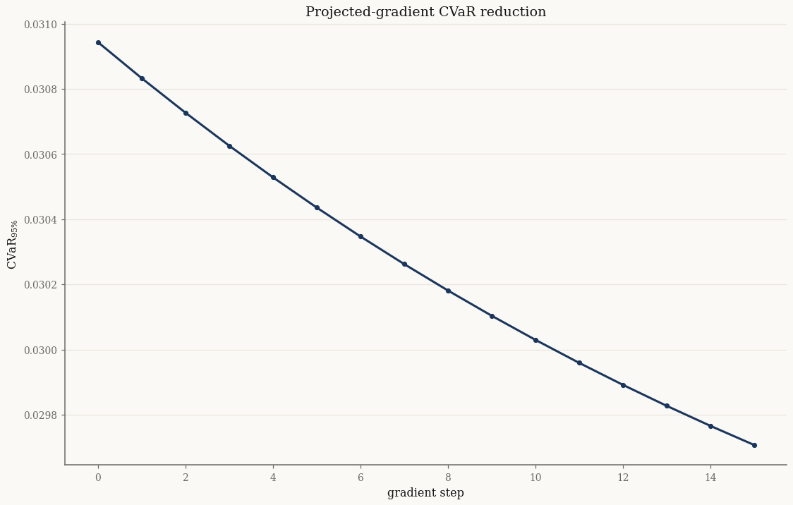

Portfolio CVaR and its derivatives#
The payoff of modelling returns with a normal variance-mean mixture is that tail risk becomes tractable. Conditional on the latent \(Y\), a portfolio is Gaussian, so the Conditional Value-at-Risk \(\operatorname{CVaR}_\alpha\) — and its gradient and Hessian in the portfolio weights — can be computed by a fast conditional Monte Carlo over \(Y\) alone. This tutorial fits a mixture, computes CVaR, verifies the analytic derivatives, and takes a few gradient steps to reduce risk.
import jax
jax.config.update("jax_enable_x64", True)
import jax.numpy as jnp
import numpy as np
import pandas as pd
from pathlib import Path
from normix import NormalInverseGaussian, UnivariateNormalInverseGaussian
from normix.finance import project_portfolio, CVaR
from normix.utils.plotting import set_theme
set_theme()
np.set_printoptions(precision=5, suppress=True)
A fitted mixture and a portfolio#
basket = ["AAPL", "MSFT", "JPM", "XOM"]
data_path = Path("../../../data/sp500_returns.csv").resolve()
R = pd.read_csv(data_path, index_col="Date", parse_dates=True)[basket].dropna()
X = jnp.asarray(R.values, dtype=jnp.float64)
model = NormalInverseGaussian.default_init(X).fit(
X, max_iter=120, tol=1e-4, e_step_backend="cpu").model
w = jnp.array([0.4, 0.3, 0.2, 0.1])
proj = project_portfolio(model, w) # 1-D return distribution of wᵀX
alpha = 0.05
cvar = CVaR(alpha)
print(f"portfolio mean {float(proj.mean()):+.5f}, std {float(proj.std()):.5f}")
portfolio mean +0.00082, std 0.01318
VaR, CVaR, and conditional Monte Carlo#
VaR is a deterministic quantile via the projected ppf. CVaR uses a conditional
Monte Carlo over the subordinator draws \(Y\) — far lower variance than sampling
returns directly:
Y = proj.subordinator.rvs(100_000, seed=0)
var_a = float(cvar.var(proj))
cvar_a = float(cvar.value(proj, Y))
print(f"VaR_{1-alpha:.0%} = {var_a:.5f}")
print(f"CVaR_{1-alpha:.0%} = {cvar_a:.5f}")
VaR_95% = 0.02048
CVaR_95% = 0.03094
We validate against a brute-force quantile estimate from one million return draws — agreement confirms the conditional-MC estimator:
draws = jnp.sort(proj.rvs(1_000_000, seed=1))
k = int(alpha * draws.shape[0])
cvar_brute = float(-draws[:k].mean())
print(f"conditional-MC CVaR : {cvar_a:.5f}")
print(f"brute-force MC CVaR : {cvar_brute:.5f}")
conditional-MC CVaR : 0.03094
brute-force MC CVaR : 0.03095
Derivatives in the scalar parametrization#
CVaR differentiates the risk analytically in the projected parameters
\((\tilde\mu, \tilde\gamma, \tilde\sigma)\). We check the gradient against a
central finite difference using common random numbers (the same \(Y\)):
sub = proj.subordinator
mt, gt, st = float(proj._mu_scalar), float(proj._gamma_scalar), float(proj._sigma_scalar)
def rebuild(m, g, s):
return UnivariateNormalInverseGaussian.from_classical(
mu=m, gamma=g, sigma=s ** 2, mu_ig=float(sub.mu), lam=float(sub.lam))
g_analytic = np.asarray(cvar.gradient_scalar(proj, Y))
eps = 1e-5
g_fd = []
for i, base in enumerate((mt, gt, st)):
hi, lo = [mt, gt, st], [mt, gt, st]
hi[i] += eps; lo[i] -= eps
g_fd.append((float(cvar.value(rebuild(*hi), Y)) - float(cvar.value(rebuild(*lo), Y))) / (2 * eps))
print("∂CVaR/∂(μ̃, γ̃, σ̃) analytic:", g_analytic)
print("∂CVaR/∂(μ̃, γ̃, σ̃) FD :", np.array(g_fd))
∂CVaR/∂(μ̃, γ̃, σ̃) analytic: [-1. -2.05454 2.10208]
∂CVaR/∂(μ̃, γ̃, σ̃) FD : [-1. -2.05454 2.10208]
The leading \(-1\) is exact: shifting the mean shifts CVaR one-for-one.
Derivatives in weight space#
For optimization we need the gradient in the weights \(w\) directly. gradient_w
and hessian_w apply the chain rule through the projection; we verify the
gradient against a finite difference of value_w:
gw_analytic = np.asarray(cvar.gradient_w(model, w, Y))
gw_fd = []
for i in range(len(w)):
hi, lo = w.at[i].add(eps), w.at[i].add(-eps)
gw_fd.append((float(cvar.value_w(model, hi, Y)) - float(cvar.value_w(model, lo, Y))) / (2 * eps))
print("∇_w CVaR analytic:", gw_analytic)
print("∇_w CVaR FD :", np.array(gw_fd))
print("Hessian_w shape :", np.asarray(cvar.hessian_w(model, w, Y)).shape)
∇_w CVaR analytic: [0.03715 0.03175 0.02403 0.0175 ]
∇_w CVaR FD : [0.03715 0.03175 0.02403 0.0175 ]
Hessian_w shape : (4, 4)
A few risk-reducing steps#
Projected gradient descent on the weights (keeping \(\sum_i w_i = 1\)) reduces the portfolio CVaR. We hold \(Y\) fixed across steps for a clean comparison:
w_opt = w
path = [float(cvar.value_w(model, w_opt, Y))]
lr = 0.5
for _ in range(15):
g = cvar.gradient_w(model, w_opt, Y)
g = g - g.mean() # project onto the simplex tangent (Σ Δw = 0)
w_opt = w_opt - lr * g
path.append(float(cvar.value_w(model, w_opt, Y)))
print(f"start weights : {np.asarray(w)}")
print(f"final weights : {np.asarray(w_opt)} (sum {float(w_opt.sum()):.4f})")
print(f"CVaR {path[0]:.5f} → {path[-1]:.5f}")
start weights : [0.4 0.3 0.2 0.1]
final weights : [0.33703 0.27551 0.22263 0.16484] (sum 1.0000)
CVaR 0.03094 → 0.02971
import matplotlib.pyplot as plt
fig, ax = plt.subplots()
ax.plot(path, "o-")
ax.set_xlabel("gradient step"); ax.set_ylabel(r"$\mathrm{CVaR}_{95\%}$")
ax.set_title("Projected-gradient CVaR reduction")
plt.show()

The weight gradient lets you plug normix’s tail risk straight into any constrained optimizer; the analytic Hessian enables second-order methods.
Takeaways#
A fitted mixture yields portfolio VaR and CVaR through a low-variance conditional Monte Carlo over the subordinator \(Y\) — validated against brute-force sampling.
CVaRprovides analytic gradients/Hessians in both \((\tilde\mu, \tilde\gamma, \tilde\sigma)\) and the weights \(w\), matching finite differences to machine precision.Those weight-space derivatives drive gradient-based CVaR optimization.
This concludes the finance section. See the Finance overview for how these pieces fit together.